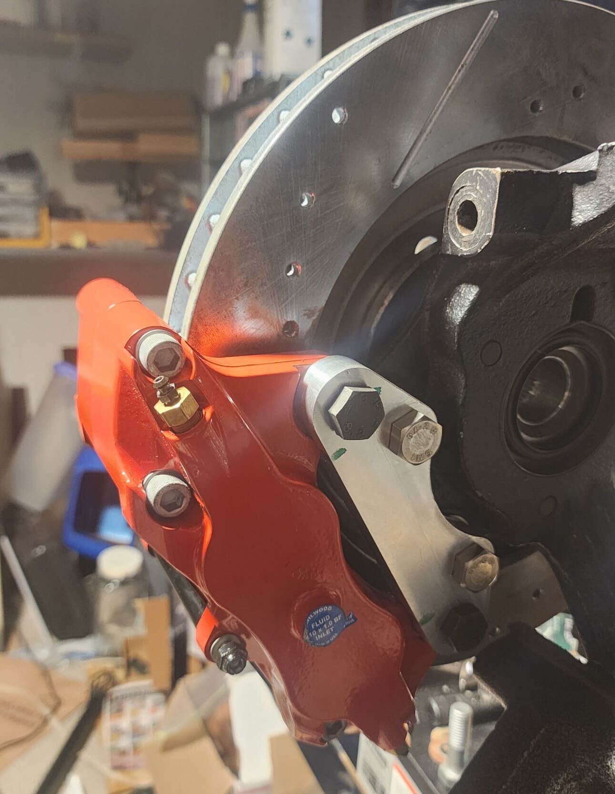
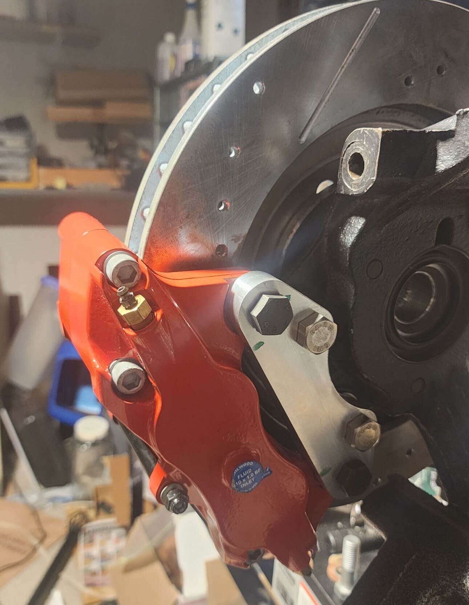

Projects
A collection of engineering projects, including independent work and contributions to Cornell Baja Racing.
4WD Driveshaft System
Currently designing the driveshaft 4WD system for Cornell Baja Racing’s next vehicle. Project focuses on improving reliability, manufacturability, and serviceability while reducing weight and complexity.
- Conducting material validation to switch from carbon fiber to aluminum, improving confidence in analysis and drastically decreasing manufacturing lead times.
- Achieved a projected subsystem weight reduction of ~20%.
- Eliminated the need for a third universal joint by improving shaft misalignment.
- Designed removable yokes with reduced envelope size to increase clearances and serviceability.
- Running ANSYS FEA and modal analysis simulations to validate component load cases and shaft critical speeds.


4WD Driveshaft Guarding
Designed and manufactured the four-wheel drive driveshaft guarding on TG21.
- Massively improved subsystem serviceability.
- Maintained subsystem weight despite increased size requirements.
- Personally fabricated every component in-house using TIG welding, manual machining, power tools, and 3D printing.
Custom Caliper Brackets
Designed and manufactured front caliper brackets for a Camaro restoration project to adapt aftermarket calipers to the OEM knuckle.
- Found a vague schematic online and translated it into a functional design.
- Created CAD in SolidWorks and CAM in HSMWorks.
- Manufactured the brackets on a 3-axis CNC machine.
 

Steam Engine CAD Model
Created a 3D model of a single-cylinder steam engine in SolidWorks to practice CAD skills.
- Worked from a vague schematic and filled in missing dimensions where needed.
- Built individual parts and assembled them with moving joints to simulate engine motion.
- Used the project to practice SolidWorks part modeling, assemblies, and constraints.